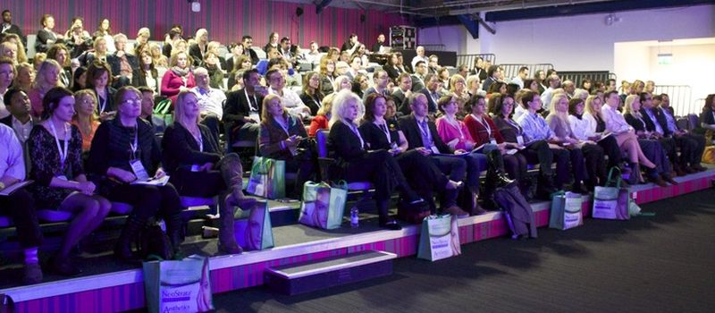
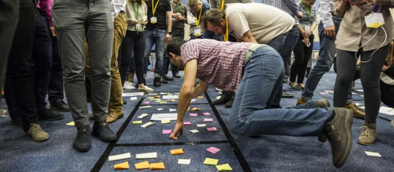
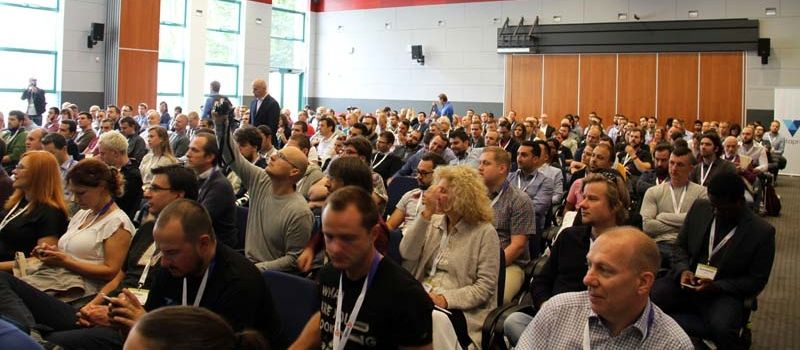
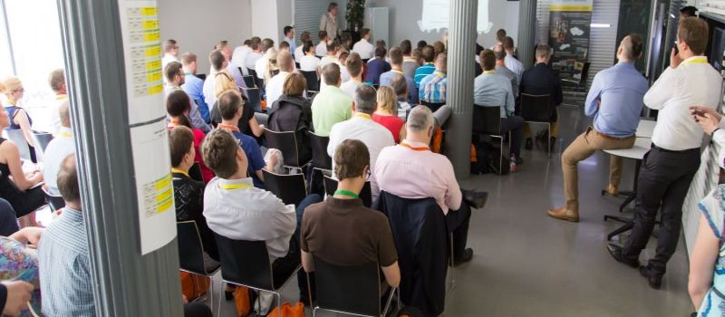
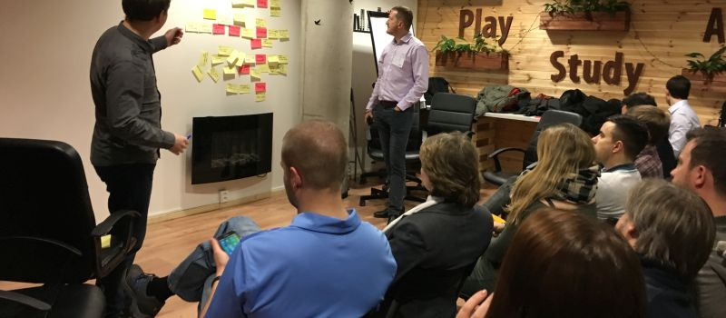

Seznam agilních akcí
Seznam agilních konferencí, unconferencí, komunitních akcí, scrum beer, agile cafe aj.
| Typ | Jméno | Město | Popis |
|---|---|---|---|
| Agilia Prague | Praha | Agilní přístupy v bankovnictví a finančním sektoru | |
| Agile Prague | Praha | ||
| Agilia Scrum Master Day | Praha | Návštěvníci si v malých skupinkách vyzkouší drobné hry | |
| Prague Scrum Beer | Praha | ||
| Agile Coach Camp | Tvoršovice (Praha) | Dvoudenní open space unconference | |
| Agile Open Space | Praha / Brno | Jednodenní unconference, kde si témata volíte sami | |
| Agilní Open Café | Praha / Brno | ||
| Pražský barcamp | Praha | Nejde přímo o agilní akci, ale v posledních letech se IT a agilní vývoj řeší často. | |
| Kentico Agile Meetup | Brno | ||
| Jak to dělám já | Brno | Vybraný Scrum Master prezentuje svůj způsob práce | |
| Scrum Beer Brno | Brno | Setkání brněnských Scrum Masterů | |
| Agile Forum | Brno | Místo, kde se lidé scházejí a diskutují | |
| Barcamp Brno | Brno | Nejde přímo o agilní akci, ale v posledních letech se IT a agilní vývoj řeší často. | |
| Agilia Conference | Olomouc | ||
| Agile Management Congress | Olomouc | „Manažeři manažerům“ | |
| ScrumImpulz | Bratislava | Management 3.0, high performing teams, worst fails… | |
| Agile@Slovakia | Slovensko | Slovenská komunita lidí aplikujících agilní principy |
FAQ
Jaké události najdu v kalendáři?
Všechny agilní konference a srazy na území ČR a SK. Placená školení a certifikační kurzy do kalendáře nepatří. Konference a meetupy mimo ČR nebo SK najdete v mezinárodním kalendáři Yves Hanoulle. Yves Hanoulle je zodpovědný za kalendář konferencí a kalendář eventů kratších než den. Naším cílem není tyto kalendáře duplikovat, ale obsáhnout především drobné lokální akce typu Scrum Beer.
Jak přidám do kalendáře vlastní akci?
Napište mi na lukas@lukasbednarik.cz. Pokud máte zájem do kalendáře přispívat pravidelněji, rád přidám váš Google účet do seznamu lidí s oprávněním provádět změny. Chcete-li změnit přímo tuto stránku, pošlete mi pull request nebo opět mailujte.
Jak naiportuji kalendář do svého Google Calendar?
Klikněte na odkaz: Přidat kalendář do kalendářů Google. Pro přístup ke kalendáři z jiných aplikací lze využít veřejnou adresu iCal:Kdo do kalendáře přispívá?
Do kalendáře přispívá malá komunita lidí - agilní nadšenci, konzultanti, školitelé. Cílem kalendáře je zlepšit agilní osvětu tím, že lidem usnadní vyhledávání akcí v jejich okolí.
Zajímavosti a trendy
- Projekt „Pořádání konference“ z banky projektů Miroslava Vlacha
- Myšlenková mapa k pořádání akce
{kind=link}
Fotografie
ACE! 2017
Agile Management Congress 2017
Agile Prague 2017
Agilia Prague 2017
Prague Scrum Beer 2017